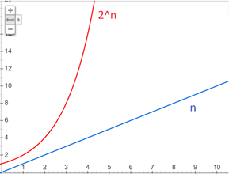

Quantum computer was firstly introduced in the 1970s and since them we have shaped theoretical ideas into working prototypes and we are now at the stage of using this hardware to further our understanding of the very world we live in.
One of the most exciting uses of quantum computing is reversible computing. This means that computers can reverse any operation it has done. For example, the task of finding the inputs of a product calculation when given the solution, was nearly impossible in reasonable time using classical computers due to the large number of possible combinations. Quantum computers though can solve this issue using quantum algorithms. This is very fascinating because all our modern-day encryption relies on the fact that this task will take an unreasonably long time for someone to calculate. Once quantum computers with enough qubits are created, we will have to find a new, quantum-safe encryption model, and this day is approaching faster than you think.
The way Quantum computers can do the above and many more amazing things, is by utilizing qubits, that can represent 1 and 0 at the same time, instead of classical bits, which can represent only one of the two states. This follows that, if there are n qubits, we could make operations of 2^n numbers at the same time. This will speed up the efficiency of computing by an exponential degree.

So, how do they work?
Quantum Computing, exploits the quantum properties of subatomic particles. These particles, include the electrons, the photons and more but they all have some amazing properties. These are:
Superposition: even though these particles can just be measures as 0 or 1, before we measure them, they can be found in a state that they are both 0 and 1. –Unbelievable isn’t it? Well, we experience a very simple example of this every day. Since light is a photon, and photons are electromagnetic waves, it can be polarized into different directions at the same time! Before polarizing, the photons are vibrating in all directions, only after the measurement, it would collapse into one direction. This is also an example of “Schrodinger’s cat”.
Quantum supremacy: The potential ability of quantum computing devices to solve problems that classical computers practically cannot.
Since quantum computing can increases computing speeds considerably, it has lots of application for our daily life:
- encryption (Shor’s algorithm)
- search (Grover’s algorithm)
- hidden subgroup problems
Therefore, many companies today strive to achieve quantum supremacy. We will look at Intel, Google, D-Wave and IBM to see what they are currently working on in the field of quantum computing, and what they future will hold for this exciting topic in computing!
BIBLIOGRAPHY
[1] https://www.intel.com
[2] https://www.google.com
[3] https://www.dwavesys.com
[4] https://www.ibm.com